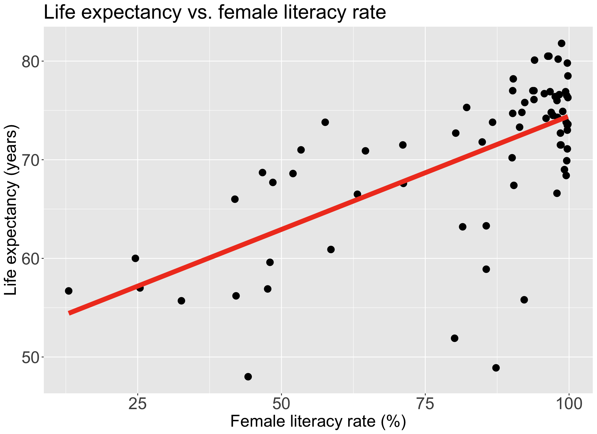
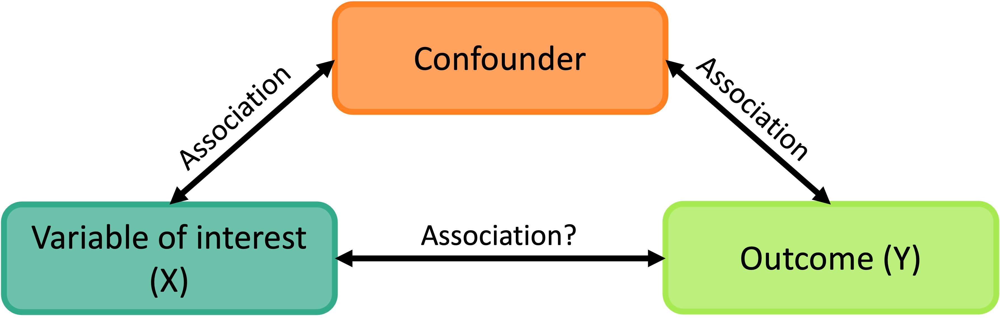
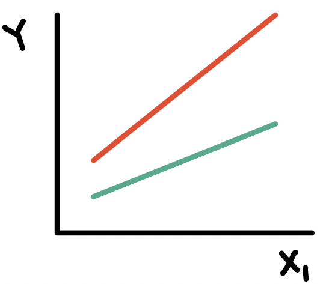
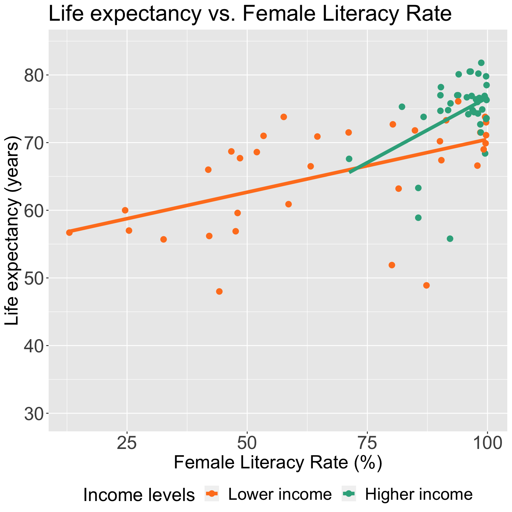
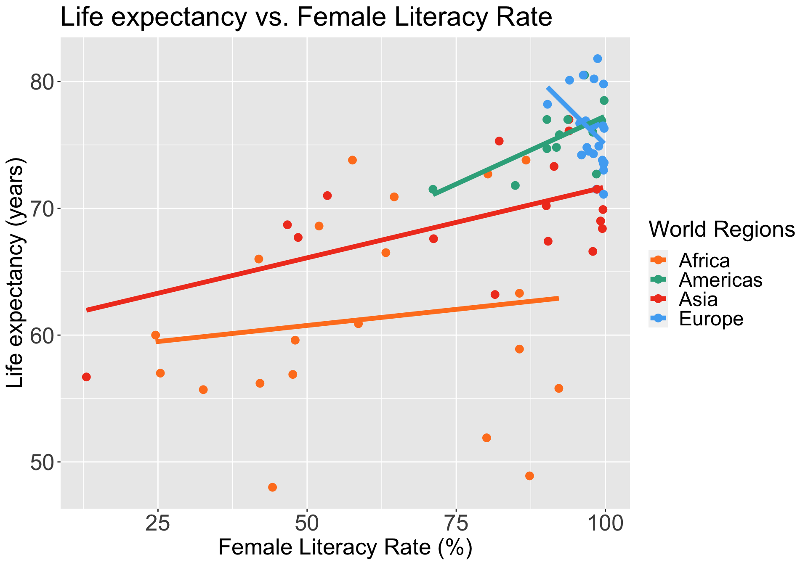
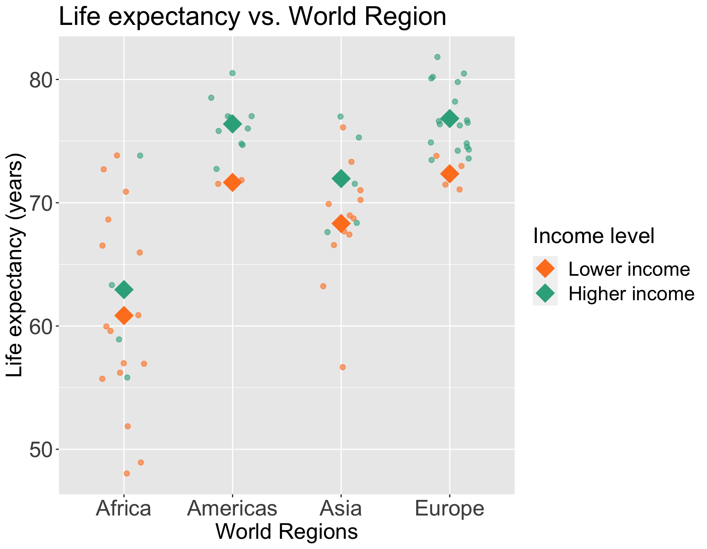
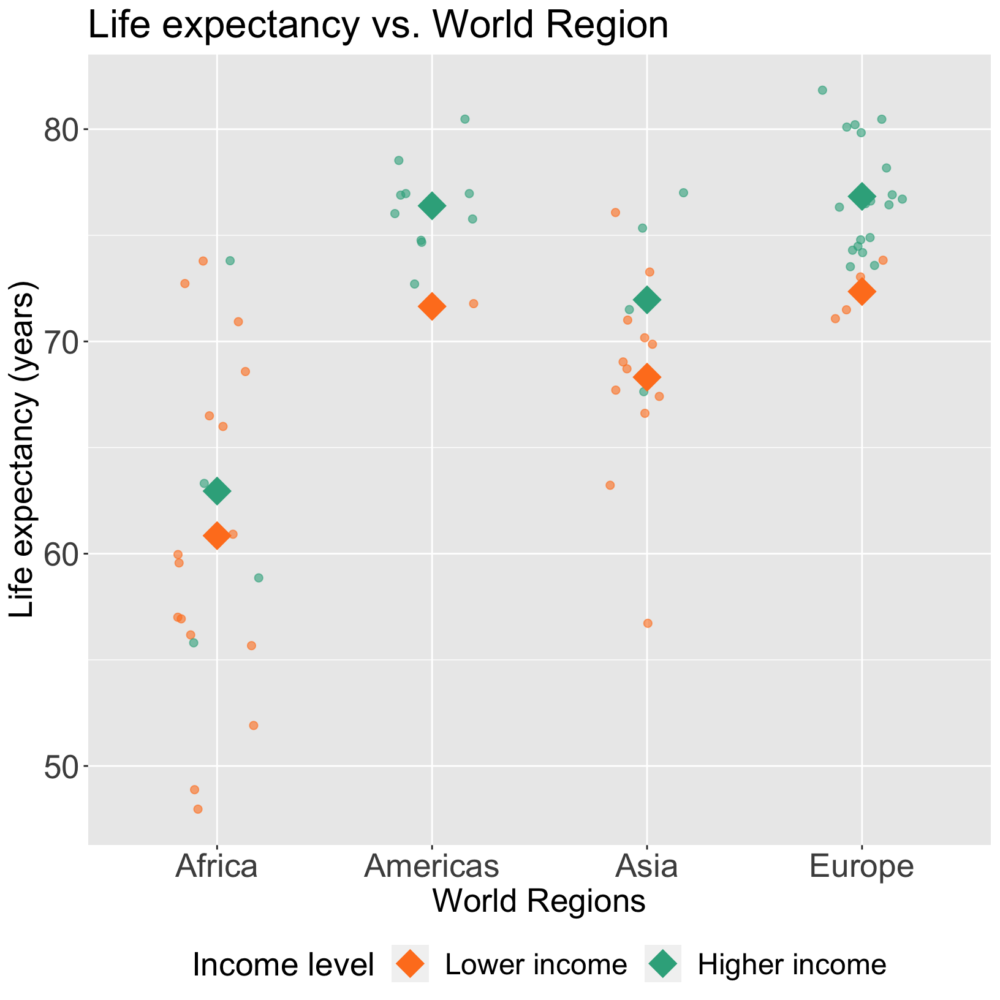

Lesson 11: Interactions
Nicky Wakim
2024-02-14
Learning Objectives
- Define confounders and effect modifiers, and how they interact with the main relationship we model.
- Interpret the interaction component of a model with a binary categorical covariate and continuous covariate, and how the main variable’s effect changes.
- Interpret the interaction component of a model with a multi-level categorical covariate and continuous covariate, and how the main variable’s effect changes.
- Interpret the interaction component of a model with two categorical covariates, and how the main variable’s effect changes.
Next time:
- Interpret the interaction component of a model with two continuous covariates, and how the main variable’s effect changes.
- When there are only two covariates in the model, test whether one is a confounder or effect modifier.
Let’s map that to our regression analysis process


Model Selection
Building a model
Selecting variables
Prediction vs interpretation
Comparing potential models
Model Fitting
Find best fit line
Using OLS in this class
Parameter estimation
Categorical covariates
Interactions
Model Evaluation
- Evaluation of model fit
- Testing model assumptions
- Residuals
- Transformations
- Influential points
- Multicollinearity
Model Use (Inference)
- Inference for coefficients
- Hypothesis testing for coefficients
- Inference for expected \(Y\) given \(X\)
Recall our data and the main relationship
Learning Objectives
- Define confounders and effect modifiers, and how they interact with the main relationship we model.
- Interpret the interaction component of a model with a binary categorical covariate and continuous covariate, and how the main variable’s effect changes.
- Interpret the interaction component of a model with a multi-level categorical covariate and continuous covariate, and how the main variable’s effect changes.
- Interpret the interaction component of a model with two categorical covariates, and how the main variable’s effect changes.
What is a confounder?
A confounding variable, or confounder, is a factor/variable that wholly or partially accounts for the observed effect of the risk factor on the outcome
A confounder must be…
- Related to the outcome Y, but not a consequence of Y
- Related to the explanatory variable X, but not a consequence of X

Including a confounder in the model
- In the following model we have two variables, \(X_1\) and \(X_2\)
\[Y= \beta_0 + \beta_1X_{1}+ \beta_2X_{2} + \epsilon\]
And we assume that every level of the confounder, there is parallel slopes
Note: to interpret \(\beta_1\), we did not specify any value of \(X_2\); only specified that it be held constant
- Implicit assumption: effect of \(X_1\) is equal across all values of \(X_2\)
The above model assumes that \(X_{1}\) and \(X_{2}\) do not interact (with respect to their effect on \(Y\))
epidemiology: no “effect modification”
meaning the effect of \(X_{1}\) is the same regardless of the values of \(X_{2}\)
Where have we modeled a confounder before?
We have seen a plot of Life expectancy vs. female literacy rate with different levels of food supply colored (Lesson 8)
In our plot and the model, we treat food supply as a confounder
If food supply is a confounder in the relationship between life expectancy and female literacy rate, then we only use main effects in the model:
\[\text{LE} = \beta_0 + \beta_1 \text{FLR} + \beta_2 \text{FS} + \epsilon\]
Poll everywhere question 1
What is an effect modifier?
An additional variable in the model
- Outside of the main relationship between \(Y\) and \(X_1\) that we are studying
An effect modifier will change the effect of \(X_1\) on \(Y\) depending on its value
Aka: as the effect modifier’s values change, so does the association between \(Y\) and \(X_1\)
So the coefficient estimating the relationship between \(Y\) and \(X_1\) changes with another variable


How do we include an effect modifier in the model?
Interactions!!
We can incorporate interactions into our model through product terms: \[Y = \beta_0 + \beta_1X_{1}+ \beta_2X_{2} + \beta_3X_{1}X_{2} + \epsilon\]
Terminology:
main effect parameters: \(\beta_1,\beta_2\)
- The main effect models estimate the average \(X_{1}\) and \(X_{2}\) effects
interaction parameter: \(\beta_3\)
Types of interactions / non-interactions
Common types of interactions:
Synergism: \(X_{2}\) strengthens the \(X_{1}\) effect
Antagonism:\(X_{2}\) weakens the \(X_{1}\) effect
If the interaction coefficient is not significant
- No evidence of effect modification, i.e., the effect of \(X_{1}\) does not vary with \(X_{2}\)
If the main effect of \(X_2\) is also not significant
- No evidence that \(X_2\) is a confounder

Learning Objectives
- Define confounders and effect modifiers, and how they interact with the main relationship we model.
- Interpret the interaction component of a model with a binary categorical covariate and continuous covariate, and how the main variable’s effect changes.
- Interpret the interaction component of a model with a multi-level categorical covariate and continuous covariate, and how the main variable’s effect changes.
- Interpret the interaction component of a model with two categorical covariates, and how the main variable’s effect changes.
Do we think income level is an effect modifier for female literacy rate?
Let’s say we only have two income groups: low income and high income
We can start by visualizing the relationship between life expectancy and female literacy rate by income level
Questions of interest: Is the effect of female literacy rate on life expectancy differ depending on income level?
- This is the same as: Is income level is an effect modifier for female literacy rate?
- Let’s run an interaction model to see!

Model with interaction between a binary categorical and continuous variables
Model we are fitting:
\[ LE = \beta_0 + \beta_1 FLR + \beta_2 I(\text{high income}) + \beta_3 FLR \cdot I(\text{high income}) + \epsilon\]
- \(LE\) as life expectancy
- \(FLR\) as female literacy rate (continuous variable)
- \(I(\text{high income})\) as the indicator that income level is “high income” (binary categorical variable)
In R:
OR
Displaying the regression table and writing fitted regression equation
tidy(m_int_inc2, conf.int=T) %>% gt() %>% tab_options(table.font.size = 35) %>% fmt_number(decimals = 3)| term | estimate | std.error | statistic | p.value | conf.low | conf.high |
|---|---|---|---|---|---|---|
| (Intercept) | 54.849 | 2.846 | 19.270 | 0.000 | 49.169 | 60.529 |
| FemaleLiteracyRate | 0.156 | 0.039 | 3.990 | 0.000 | 0.078 | 0.235 |
| income_levels2Higher income | −16.649 | 15.364 | −1.084 | 0.282 | −47.308 | 14.011 |
| FemaleLiteracyRate:income_levels2Higher income | 0.228 | 0.164 | 1.392 | 0.168 | −0.099 | 0.555 |
\[ \begin{aligned} \widehat{LE} = & \widehat\beta_0 + \widehat\beta_1 FLR + \widehat\beta_2 I(\text{high income}) + \widehat\beta_3 FLR \cdot I(\text{high income}) \\ \widehat{LE} = & 54.85 + 0.156 \cdot FLR - 16.65 \cdot I(\text{high income}) + 0.228 \cdot FLR \cdot I(\text{high income}) \end{aligned}\]
Poll Everywhere Question 2
Comparing fitted regression lines for each income level
\[ \begin{aligned} \widehat{LE} = & \widehat\beta_0 + \widehat\beta_1 FLR + \widehat\beta_2 I(\text{high income}) + \widehat\beta_3 FLR \cdot I(\text{high income}) \\ \widehat{LE} = & 54.85 + 0.156 \cdot FLR - 16.65 \cdot I(\text{high income}) + 0.228 \cdot FLR \cdot I(\text{high income}) \end{aligned}\]
For lower income countries: \(I(\text{high income}) =0\)
\[ \begin{aligned} \widehat{LE} = & \widehat\beta_0 + \widehat\beta_1 FLR + \widehat\beta_2 \cdot 0 + \widehat\beta_3 FLR \cdot 0 \\ \widehat{LE} = & 54.85 + 0.156 \cdot FLR - 16.65 \cdot 0 + \\ & 0.228 \cdot FLR \cdot 0 \\ \widehat{LE} = & 54.85 + 0.156 \cdot FLR\\ \end{aligned}\]
For higher income countries: \(I(\text{high income}) =1\)
\[ \begin{aligned} \widehat{LE} = & \widehat\beta_0 + \widehat\beta_1 FLR + \widehat\beta_2 \cdot 1 + \widehat\beta_3 FLR \cdot 1 \\ \widehat{LE} = & 54.85 + 0.156 \cdot FLR - 16.65 \cdot 1 + \\ & 0.228 \cdot FLR \cdot 1 \\ \widehat{LE} = & (54.85 - 16.65 \cdot 1) + \\ & (0.156 \cdot FLR + 0.228 \cdot FLR \cdot 1) \\ \widehat{LE} = & (54.85 - 16.65) + (0.156 + 0.228) \cdot FLR\\ \widehat{LE} = & 38.2 + 0.384 \cdot FLR\\ \end{aligned}\]
Let’s take a look back at the plot
For lower income countries: \(I(\text{high income}) =0\)
\[ \begin{aligned} \widehat{LE} = & \widehat\beta_0 + \widehat\beta_1 FLR \\ \widehat{LE} = & 54.85 + 0.156 \cdot FLR\\ \end{aligned}\]
For higher income countries: \(I(\text{high income}) =1\)
\[ \begin{aligned} \widehat{LE} = & (\widehat\beta_0 +\widehat\beta_2) + (\widehat\beta_1 +\widehat\beta_3) FLR \\ \widehat{LE} = & (54.85 - 16.65) + (0.156 + 0.228) \cdot FLR\\ \widehat{LE} = & 38.2 + 0.384 \cdot FLR\\ \end{aligned}\]

Interpretation for interaction between binary categorical and continuous variables
\[ \begin{aligned} \widehat{LE} = & \widehat\beta_0 + \widehat\beta_1 FLR + \widehat\beta_2 I(\text{high income}) + \widehat\beta_3 FLR \cdot I(\text{high income}) \\ \widehat{LE} = & \bigg[\widehat\beta_0 + \widehat\beta_2 \cdot I(\text{high income})\bigg] + \underbrace{\bigg[\widehat\beta_1 + \widehat\beta_3 \cdot I(\text{high income}) \bigg]}_\text{FLR's effect} FLR \\ \end{aligned}\]
Interpretation:
\(\beta_3\) = mean change in female literacy rate’s effect, comparing higher income to lower income levels
where the “female literacy rate effect” equals the change in mean life expectancy per percent increase in female literacy with income level held constant, i.e. “adjusted female literacy rate effect”
In summary, the interaction term can be interpreted as “difference in adjusted female literacy rate effect comparing higher income to lower income levels”
It will be helpful to test the interaction to round out this interpretation!!
Test interaction between binary categorical and continuous variables
- We run an F-test for a single coefficient (\(\beta_3\)) in the below model (see lesson 9, MLR: Inference / F-test)
\[ LE = \beta_0 + \beta_1 FLR + \beta_2 I(\text{high income}) + \beta_3 FLR \cdot I(\text{high income}) + \epsilon\]
Null \(H_0\)
\(\beta_3=0\)
Alternative \(H_1\)
\(\beta_3\neq0\)
Null / Smaller / Reduced model
\[\begin{aligned} LE = & \beta_0 + \beta_1 FLR + \beta_2 I(\text{high income}) + \\ &\epsilon \end{aligned}\]
Alternative / Larger / Full model
\[\begin{aligned} LE = & \beta_0 + \beta_1 FLR + \beta_2 I(\text{high income}) + \\ &\beta_3 FLR \cdot I(\text{high income}) + \epsilon \end{aligned}\]
- I’m going to be skipping steps so please look back at Lesson 9 for full steps (required in HW 4)
Test interaction between binary categorical and continuous variables
- Fit the reduced and full model
- Display the ANOVA table with F-statistic and p-value
| term | df.residual | rss | df | sumsq | statistic | p.value |
|---|---|---|---|---|---|---|
| LifeExpectancyYrs ~ FemaleLiteracyRate + income_levels2 | 69.000 | 2,407.667 | NA | NA | NA | NA |
| LifeExpectancyYrs ~ FemaleLiteracyRate + income_levels2 + FemaleLiteracyRate * income_levels2 | 68.000 | 2,340.948 | 1.000 | 66.719 | 1.938 | 0.168 |
Conclusion: There is not a significant interaction between female literacy rate and income level (p = 0.168).
- If significant, we say more: For higher income levels, for every one percent increase in female literacy rate, the mean life expectancy increases 0.384 years. For lower income levels, for every one percent increase in female literacy rate, the mean life expectancy increases 0.156 years. Thus, the female literacy rate almost doubles comparing high income to low income levels.
Learning Objectives
- Define confounders and effect modifiers, and how they interact with the main relationship we model.
- Interpret the interaction component of a model with a binary categorical covariate and continuous covariate, and how the main variable’s effect changes.
- Interpret the interaction component of a model with a multi-level categorical covariate and continuous covariate, and how the main variable’s effect changes.
- Interpret the interaction component of a model with two categorical covariates, and how the main variable’s effect changes.
Do we think world region is an effect modifier for female literacy rate?
We can start by visualizing the relationship between life expectancy and female literacy rate by world region
Questions of interest: Does the effect of female literacy rate on life expectancy differ depending on world region?
- This is the same as: Is world region is an effect modifier for female literacy rate?
Let’s run an interaction model to see!

Model with interaction between a multi-level categorical and continuous variables
Model we are fitting:
\[\begin{aligned}LE = &\beta_0 + \beta_1 FLR + \beta_2 I(\text{Americas}) + \beta_3 I(\text{Asia}) + \beta_4 I(\text{Europe}) + \\ & \beta_5 FLR \cdot I(\text{Americas}) + \beta_6 FLR \cdot I(\text{Asia})+ \beta_7 FLR \cdot I(\text{Europe})+ \epsilon \end{aligned}\]
- \(LE\) as life expectancy
- \(FLR\) as female literacy rate (continuous variable)
- \(I(\text{Americas})\), \(I(\text{Asia})\), \(I(\text{Europe})\) as the indicator for each world region
In R:
OR
Displaying the regression table and writing fitted regression equation
tidy(m_int_wr, conf.int=T) %>% gt() %>% tab_options(table.font.size = 35) %>% fmt_number(decimals = 3)| term | estimate | std.error | statistic | p.value | conf.low | conf.high |
|---|---|---|---|---|---|---|
| (Intercept) | 58.225 | 3.377 | 17.240 | 0.000 | 51.478 | 64.972 |
| FemaleLiteracyRate | 0.051 | 0.053 | 0.957 | 0.342 | −0.055 | 0.157 |
| four_regionsAmericas | −2.406 | 17.913 | −0.134 | 0.894 | −38.191 | 33.379 |
| four_regionsAsia | 2.283 | 5.410 | 0.422 | 0.674 | −8.525 | 13.091 |
| four_regionsEurope | 63.628 | 46.414 | 1.371 | 0.175 | −29.095 | 156.350 |
| FemaleLiteracyRate:four_regionsAmericas | 0.164 | 0.197 | 0.830 | 0.410 | −0.231 | 0.558 |
| FemaleLiteracyRate:four_regionsAsia | 0.061 | 0.073 | 0.830 | 0.410 | −0.086 | 0.208 |
| FemaleLiteracyRate:four_regionsEurope | −0.519 | 0.476 | −1.090 | 0.280 | −1.471 | 0.432 |
\[\begin{aligned} \widehat{LE} = &\widehat\beta_0 + \widehat\beta_1 FLR + \widehat\beta_2 I(\text{Americas}) + \widehat\beta_3 I(\text{Asia}) + \widehat\beta_4 I(\text{Europe}) + \\ & \widehat\beta_5 FLR \cdot I(\text{Americas}) + \widehat\beta_6 FLR \cdot I(\text{Asia})+ \widehat\beta_7 FLR \cdot I(\text{Europe}) \\ \widehat{LE} = & 58.23 + 0.051 \cdot FLR −2.41 \cdot I(\text{Americas}) + 2.28 \cdot I(\text{Asia}) + 63.63 \cdot I(\text{Europe}) + \\ & 0.164 \cdot FLR \cdot I(\text{Americas}) + 0.061 \cdot FLR \cdot I(\text{Asia}) −0.519 \cdot FLR \cdot I(\text{Europe}) \end{aligned}\]
Comparing fitted regression lines for each world region
\[\begin{aligned} \widehat{LE} = &\widehat\beta_0 + \widehat\beta_1 FLR + \widehat\beta_2 I(\text{Americas}) + \widehat\beta_3 I(\text{Asia}) + \widehat\beta_4 I(\text{Europe}) + \\ & \widehat\beta_5 FLR \cdot I(\text{Americas}) + \widehat\beta_6 FLR \cdot I(\text{Asia})+ \widehat\beta_7 FLR \cdot I(\text{Europe}) \\ \widehat{LE} = & 58.23 + 0.051 \cdot FLR −2.41 \cdot I(\text{Americas}) + 2.28 \cdot I(\text{Asia}) + 63.63 \cdot I(\text{Europe}) + \\ & 0.164 \cdot FLR \cdot I(\text{Americas}) + 0.061 \cdot FLR \cdot I(\text{Asia}) −0.519 \cdot FLR \cdot I(\text{Europe}) \end{aligned}\]
Africa
\[\begin{aligned} \widehat{LE} = &\widehat\beta_0 + \widehat\beta_1 FLR + \\ & \widehat\beta_2 \cdot 0 + \widehat\beta_3 \cdot 0 + \\ & \widehat\beta_4 \cdot 0 + \widehat\beta_5 FLR \cdot 0 + \\ & \widehat\beta_6 FLR \cdot 0+ \widehat\beta_7 FLR \cdot 0 \\ \widehat{LE} = &\widehat\beta_0 + \widehat\beta_1 FLR\\ \end{aligned}\]
The Americas
\[\begin{aligned} \widehat{LE} = &\widehat\beta_0 + \widehat\beta_1 FLR + \\ & \widehat\beta_2 \cdot 1 + \widehat\beta_3 \cdot 0 + \\ & \widehat\beta_4 \cdot 0 + \widehat\beta_5 FLR \cdot 1 + \\ & \widehat\beta_6 FLR \cdot 0+ \widehat\beta_7 FLR \cdot 0 \\ \widehat{LE} = &\big(\widehat\beta_0+\widehat\beta_2\big) + \\ &\big(\widehat\beta_1 + \widehat\beta_5\big)FLR \\ \end{aligned}\]
Asia
\[\begin{aligned} \widehat{LE} = &\widehat\beta_0 + \widehat\beta_1 FLR + \\ & \widehat\beta_2 \cdot 0 + \widehat\beta_3 \cdot 1 + \\ & \widehat\beta_4 \cdot 0 + \widehat\beta_5 FLR \cdot 0 + \\ & \widehat\beta_6 FLR \cdot 1+ \widehat\beta_7 FLR \cdot 0 \\ \widehat{LE} = &\big(\widehat\beta_0+\widehat\beta_3\big) + \\ &\big(\widehat\beta_1 + \widehat\beta_6\big)FLR \\ \end{aligned}\]
Europe
\[\begin{aligned} \widehat{LE} = &\widehat\beta_0 + \widehat\beta_1 FLR + \\ & \widehat\beta_2 \cdot 0 + \widehat\beta_3 \cdot 0 + \\ & \widehat\beta_4 \cdot 1 + \widehat\beta_5 FLR \cdot 0 + \\ & \widehat\beta_6 FLR \cdot 0+ \widehat\beta_7 FLR \cdot 1 \\ \widehat{LE} = &\big(\widehat\beta_0+\widehat\beta_4\big) + \\ & \big(\widehat\beta_1 + \widehat\beta_7\big)FLR \\ \end{aligned}\]
Poll Everywhere Question 3
Centering continuous variables when we are including interactions

- For Europe, the mean life expectancy had a regression line with a large intercept
\[\begin{aligned} \widehat{LE} = &\big(\widehat\beta_0+\widehat\beta_4\big) + \big(\widehat\beta_1 + \widehat\beta_7\big)FLR \\ \widehat{LE} = & (58.23 + 63.63) + (0.051 - 0.519)FLR \\ \widehat{LE} = & 121.86 -0.468FLR \\ \end{aligned}\]
Centering the continuous variables in a model (when they are involved in interactions) helps with:
Interpretations of the coefficient estimates
Correlation between the main effect for the variable and the interaction that it is involved with
- To be discussed in future lecture: leads to multicollinearity issues
Other online sources about when and when not to center:
It’ll be helpful to center female literacy rate
- Centering female literacy rate: \[ FLR^c = FLR - \overline{FLR}\]
- Centering in R:
- I’m going to print the mean so I can use it for my interpretations
Now all intercept values (in each respective world region) will be the mean life expectancy when female literacy rate is 82.03%
We will used center FLR for the rest of the lecture
Now we refit the model with the centered FLR
m_int_wr_flrc = lm(LifeExpectancyYrs ~ FLR_c*four_regions,
data = gapm_sub)
tidy(m_int_wr_flrc, conf.int=T) %>% gt() %>% tab_options(table.font.size = 35) %>% fmt_number(decimals = 3)| term | estimate | std.error | statistic | p.value | conf.low | conf.high |
|---|---|---|---|---|---|---|
| (Intercept) | 62.387 | 1.626 | 38.358 | 0.000 | 59.138 | 65.637 |
| FLR_c | 0.051 | 0.053 | 0.957 | 0.342 | −0.055 | 0.157 |
| four_regionsAmericas | 11.032 | 2.918 | 3.781 | 0.000 | 5.203 | 16.862 |
| four_regionsAsia | 7.287 | 2.042 | 3.568 | 0.001 | 3.207 | 11.367 |
| four_regionsEurope | 21.038 | 7.698 | 2.733 | 0.008 | 5.659 | 36.417 |
| FLR_c:four_regionsAmericas | 0.164 | 0.197 | 0.830 | 0.410 | −0.231 | 0.558 |
| FLR_c:four_regionsAsia | 0.061 | 0.073 | 0.830 | 0.410 | −0.086 | 0.208 |
| FLR_c:four_regionsEurope | −0.519 | 0.476 | −1.090 | 0.280 | −1.471 | 0.432 |
- What changed? What stayed the same? What’s the new intercept for Europe?
Interpretation for interaction between multi-level categorical and continuous variables
\[ \begin{aligned} \widehat{LE} = &\widehat\beta_0 + \widehat\beta_1 FLR + \widehat\beta_2 I(\text{Americas}) + \widehat\beta_3 I(\text{Asia}) + \widehat\beta_4 I(\text{Europe}) + \\ & \widehat\beta_5 FLR \cdot I(\text{Americas}) + \widehat\beta_6 FLR \cdot I(\text{Asia})+ \widehat\beta_7 FLR \cdot I(\text{Europe}) \\ \widehat{LE} = & \bigg[\widehat\beta_0 + \widehat\beta_2 I(\text{Americas}) + \widehat\beta_3 I(\text{Asia}) + \widehat\beta_4 I(\text{Europe})\bigg] + \\ &\underbrace{\bigg[\widehat\beta_1 + \widehat\beta_5 \cdot I(\text{Americas}) + \widehat\beta_6 \cdot I(\text{Asia})+ \widehat\beta_7 \cdot I(\text{Europe}) \bigg]}_\text{FLR's effect} FLR \\ \end{aligned}\]
Interpretation:
- \(\beta_5\) = mean change in female literacy rate’s effect, comparing countries in the Americas to countries in Africa
- \(\beta_6\) = mean change in female literacy rate’s effect, comparing countries in Asia to countries in Africa
- \(\beta_7\) = mean change in female literacy rate’s effect, comparing countries in Europe to countries in Africa
It will be helpful to test the interaction to round out this interpretation!!
Test interaction between multi-level categorical & continuous variables
- We run an F-test for a group of coefficients (\(\beta_5\), \(\beta_6\), \(\beta_7\)) in the below model (see lesson 9)
\[\begin{aligned}LE = &\beta_0 + \beta_1 FLR + \beta_2 I(\text{Americas}) + \beta_3 I(\text{Asia}) + \beta_4 I(\text{Europe}) + \\ & \beta_5 FLR \cdot I(\text{Americas}) + \beta_6 FLR \cdot I(\text{Asia})+ \beta_7 FLR \cdot I(\text{Europe})+ \epsilon \end{aligned}\]
Null \(H_0\)
\(\beta_5= \beta_6 = \beta_7 =0\)
Alternative \(H_1\)
\(\beta_5\neq0\) and/or \(\beta_6\neq0\) and/or \(\beta_7\neq0\)
Null / Smaller / Reduced model
\[\begin{aligned}LE = &\beta_0 + \beta_1 FLR + \beta_2 I(\text{Americas}) + \\ & \beta_3 I(\text{Asia}) + \beta_4 I(\text{Europe}) + \epsilon \end{aligned}\]
Alternative / Larger / Full model
\[\begin{aligned}LE = &\beta_0 + \beta_1 FLR + \beta_2 I(\text{Americas}) + \beta_3 I(\text{Asia}) + \\ & \beta_4 I(\text{Europe}) + \beta_5 FLR \cdot I(\text{Americas}) + \\ & \beta_6 FLR \cdot I(\text{Asia})+ \beta_7 FLR \cdot I(\text{Europe})+ \epsilon \end{aligned}\]
Test interaction between multi-level categorical & continuous variables
- Fit the reduced and full model
- Display the ANOVA table with F-statistic and p-value
| term | df.residual | rss | df | sumsq | statistic | p.value |
|---|---|---|---|---|---|---|
| LifeExpectancyYrs ~ FLR_c + four_regions | 67.000 | 1,705.881 | NA | NA | NA | NA |
| LifeExpectancyYrs ~ FLR_c + four_regions + FLR_c * four_regions | 64.000 | 1,641.151 | 3.000 | 64.731 | 0.841 | 0.476 |
- Conclusion: There is not a significant interaction between female literacy rate and income level (p = 0.478).
Learning Objectives
- Define confounders and effect modifiers, and how they interact with the main relationship we model.
- Interpret the interaction component of a model with a binary categorical covariate and continuous covariate, and how the main variable’s effect changes.
- Interpret the interaction component of a model with a multi-level categorical covariate and continuous covariate, and how the main variable’s effect changes.
- Interpret the interaction component of a model with two categorical covariates, and how the main variable’s effect changes.
Do we think income level can be an effect modifier for world region?
Taking a break from female literacy rate to demonstrate interactions for two categorical variables
We can start by visualizing the relationship between life expectancy and world region by income level
Questions of interest: Does the effect of world region on life expectancy differ depending on income level?
- This is the same as: Is income level an effect modifier for world region?
Let’s run an interaction model to see!

Model with interaction between a multi-level categorical and continuous variables
Model we are fitting:
\[\begin{aligned}LE = &\beta_0 + \beta_1 I(\text{high income}) + \beta_2 I(\text{Americas}) + \beta_3 I(\text{Asia}) + \beta_4 I(\text{Europe}) + \\ & \beta_5 \cdot I(\text{high income}) \cdot I(\text{Americas}) + \beta_6\cdot I(\text{high income}) \cdot I(\text{Asia})+ \\ & \beta_7 \cdot I(\text{high income})\cdot I(\text{Europe})+ \epsilon \end{aligned}\]
- \(LE\) as life expectancy
- \(I(\text{high income})\) as indicator of high income
- \(I(\text{Americas})\), \(I(\text{Asia})\), \(I(\text{Europe})\) as the indicator for each world region
In R:
# gapm_sub = gapm_sub %>% mutate(income_levels2 = relevel(income_levels2, ref = "Higher income")) # for poll everywhere
m_int_wr_inc = lm(LifeExpectancyYrs ~ income_levels2 + four_regions +
income_levels2*four_regions, data = gapm_sub)
m_int_wr_inc = lm(LifeExpectancyYrs ~ income_levels2*four_regions,
data = gapm_sub)Displaying the regression table and writing fitted regression equation
tidy(m_int_wr_inc, conf.int=T) %>% gt() %>% tab_options(table.font.size = 25) %>% fmt_number(decimals = 3)| term | estimate | std.error | statistic | p.value | conf.low | conf.high |
|---|---|---|---|---|---|---|
| (Intercept) | 60.850 | 1.281 | 47.488 | 0.000 | 58.290 | 63.410 |
| income_levels2Higher income | 2.100 | 2.865 | 0.733 | 0.466 | −3.624 | 7.824 |
| four_regionsAmericas | 10.800 | 3.844 | 2.810 | 0.007 | 3.121 | 18.479 |
| four_regionsAsia | 7.467 | 1.957 | 3.815 | 0.000 | 3.556 | 11.377 |
| four_regionsEurope | 11.500 | 2.865 | 4.014 | 0.000 | 5.776 | 17.224 |
| income_levels2Higher income:four_regionsAmericas | 2.640 | 4.896 | 0.539 | 0.592 | −7.141 | 12.421 |
| income_levels2Higher income:four_regionsAsia | 1.543 | 3.956 | 0.390 | 0.698 | −6.360 | 9.447 |
| income_levels2Higher income:four_regionsEurope | 2.382 | 4.020 | 0.592 | 0.556 | −5.649 | 10.412 |
\[\begin{aligned} \widehat{LE} = &\widehat\beta_0 + \widehat\beta_1 I(\text{high income}) + \widehat\beta_2 I(\text{Americas}) + \widehat\beta_3 I(\text{Asia}) + \widehat\beta_4 I(\text{Europe}) + \\ & \widehat\beta_5 \cdot I(\text{high income}) \cdot I(\text{Americas}) + \widehat\beta_6\cdot I(\text{high income}) \cdot I(\text{Asia})+ \\ & \widehat\beta_7 \cdot I(\text{high income})\cdot I(\text{Europe}) \\ \widehat{LE} = & 60.85 + 2.10 \cdot I(\text{high income}) + 10.8 \cdot I(\text{Americas}) + 7.47\cdot I(\text{Asia}) + 11.50 \cdot I(\text{Europe}) + \\ & 2.64 \cdot I(\text{high income}) \cdot I(\text{Americas}) + 1.54 \cdot I(\text{high income}) \cdot I(\text{Asia})+ \\ & 2.38 \cdot I(\text{high income})\cdot I(\text{Europe}) \\ \end{aligned}\]
Poll Everywhere Question 4

Comparing fitted regression means for each world region
\[\begin{aligned} \widehat{LE} = &\widehat\beta_0 + \widehat\beta_1 I(\text{high income}) + \widehat\beta_2 I(\text{Americas}) + \widehat\beta_3 I(\text{Asia}) + \widehat\beta_4 I(\text{Europe}) + \\ & \widehat\beta_5 \cdot I(\text{high income}) \cdot I(\text{Americas}) + \widehat\beta_6\cdot I(\text{high income}) \cdot I(\text{Asia})+ \\ & \widehat\beta_7 \cdot I(\text{high income})\cdot I(\text{Europe}) \\ \widehat{LE} = & 60.85 + 2.10 \cdot I(\text{high income}) + 10.8 \cdot I(\text{Americas}) + 7.47\cdot I(\text{Asia}) + 11.50 \cdot I(\text{Europe}) + \\ & 2.64 \cdot I(\text{high income}) \cdot I(\text{Americas}) + 1.54 \cdot I(\text{high income}) \cdot I(\text{Asia})+ \\ & 2.38 \cdot I(\text{high income})\cdot I(\text{Europe}) \\ \end{aligned}\]
Africa
\[\begin{aligned} \widehat{LE} = &\widehat\beta_0 + \widehat\beta_1 I(\text{high income}) + \\ & \widehat\beta_2 \cdot 0 + \widehat\beta_3 \cdot 0 + \widehat\beta_4 \cdot 0 + \\ & \widehat\beta_5 I(\text{high income}) \cdot 0 + \\ & \widehat\beta_6 I(\text{high income}) \cdot 0+ \\& \widehat\beta_7 I(\text{high income}) \cdot 0 \\ \widehat{LE} = &\widehat\beta_0 + \widehat\beta_1 I(\text{high income})\\ \end{aligned}\]
The Americas
\[\begin{aligned} \widehat{LE} = &\widehat\beta_0 + \widehat\beta_1 I(\text{high income}) + \\ & \widehat\beta_2 \cdot 1 + \widehat\beta_3 \cdot 0 + \widehat\beta_4 \cdot 0 + \\ & \widehat\beta_5 I(\text{high income}) \cdot 1 + \\ & \widehat\beta_6 I(\text{high income}) \cdot 0+ \\ & \widehat\beta_7 I(\text{high income}) \cdot 0 \\ \widehat{LE} = &\big(\widehat\beta_0+\widehat\beta_2\big) + \\ &\big(\widehat\beta_1 + \widehat\beta_5\big)I(\text{high income}) \\ \end{aligned}\]
Asia
\[\begin{aligned} \widehat{LE} = &\widehat\beta_0 + \widehat\beta_1 I(\text{high income}) + \\ & \widehat\beta_2 \cdot 0 + \widehat\beta_3 \cdot 1 + \widehat\beta_4 \cdot 0 + \\ & \widehat\beta_5 I(\text{high income}) \cdot 0 + \\ & \widehat\beta_6 I(\text{high income}) \cdot 1+ \\ & \widehat\beta_7 I(\text{high income}) \cdot 0 \\ \widehat{LE} = &\big(\widehat\beta_0+\widehat\beta_3\big) + \\ &\big(\widehat\beta_1 + \widehat\beta_6\big)I(\text{high income}) \\ \end{aligned}\]
Europe
\[\begin{aligned} \widehat{LE} = &\widehat\beta_0 + \widehat\beta_1 I(\text{high income}) + \\ & \widehat\beta_2 \cdot 0 + \widehat\beta_3 \cdot 0 + \widehat\beta_4 \cdot 1 + \\ & \widehat\beta_5 I(\text{high income}) \cdot 0 + \\ & \widehat\beta_6 I(\text{high income}) \cdot 0+ \\ & \widehat\beta_7 I(\text{high income}) \cdot 1 \\ \widehat{LE} = &\big(\widehat\beta_0+\widehat\beta_4\big) + \\ & \big(\widehat\beta_1 + \widehat\beta_7\big)I(\text{high income}) \\ \end{aligned}\]
Comparing fitted regression means for each income level
\[\begin{aligned} \widehat{LE} = &\widehat\beta_0 + \widehat\beta_1 I(\text{high income}) + \widehat\beta_2 I(\text{Americas}) + \widehat\beta_3 I(\text{Asia}) + \widehat\beta_4 I(\text{Europe}) + \\ & \widehat\beta_5 \cdot I(\text{high income}) \cdot I(\text{Americas}) + \widehat\beta_6\cdot I(\text{high income}) \cdot I(\text{Asia})+ \\ & \widehat\beta_7 \cdot I(\text{high income})\cdot I(\text{Europe}) \\ \widehat{LE} = & 60.85 + 2.10 \cdot I(\text{high income}) + 10.8 \cdot I(\text{Americas}) + 7.47\cdot I(\text{Asia}) + 11.50 \cdot I(\text{Europe}) + \\ & 2.64 \cdot I(\text{high income}) \cdot I(\text{Americas}) + 1.54 \cdot I(\text{high income}) \cdot I(\text{Asia})+ \\ & 2.38 \cdot I(\text{high income})\cdot I(\text{Europe}) \\ \end{aligned}\]
For lower income countries: \(I(\text{high income}) =0\)
\[ \begin{aligned} \widehat{LE} = &\widehat\beta_0 + \widehat\beta_1 \cdot 0 + \widehat\beta_2 I(\text{Americas}) + \widehat\beta_3 I(\text{Asia}) + \widehat\beta_4 I(\text{Europe}) + \\ & \widehat\beta_5 \cdot 0\cdot I(\text{Americas}) + \widehat\beta_6\cdot 0 \cdot I(\text{Asia})+ \widehat\beta_7 \cdot 0\cdot I(\text{Europe}) \\ \widehat{LE} = &\widehat\beta_0 + \widehat\beta_2 I(\text{Americas}) + \widehat\beta_3 I(\text{Asia}) + \widehat\beta_4 I(\text{Europe}) \\ \end{aligned}\]
For higher income countries: \(I(\text{high income}) =1\)
\[ \begin{aligned} \widehat{LE} = &\widehat\beta_0 + \widehat\beta_1 \cdot 1 + \widehat\beta_2 I(\text{Americas}) + \widehat\beta_3 I(\text{Asia}) + \widehat\beta_4 I(\text{Europe}) + \\ & \widehat\beta_5 \cdot 1\cdot I(\text{Americas}) + \widehat\beta_6\cdot 1 \cdot I(\text{Asia})+ \widehat\beta_7 \cdot 1\cdot I(\text{Europe}) \\ \widehat{LE} = & (\widehat\beta_0 + \widehat\beta_1) + (\widehat\beta_2 + \widehat\beta_5) I(\text{Americas}) + (\widehat\beta_3 + \widehat\beta_6) I(\text{Asia}) + \\ & (\widehat\beta_4 + \widehat\beta_7) I(\text{Europe}) \\ \end{aligned}\]
Let’s take a look back at the plot
For lower income countries: \(I(\text{high income}) =0\)
\[ \begin{aligned} \widehat{LE} = &\widehat\beta_0 + \widehat\beta_2 I(\text{Americas}) + \widehat\beta_3 I(\text{Asia}) + \\ & \widehat\beta_4 I(\text{Europe}) \\ \end{aligned}\]
For higher income countries: \(I(\text{high income}) =1\)
\[ \begin{aligned} \widehat{LE} = & (\widehat\beta_0 + \widehat\beta_1) + (\widehat\beta_2 + \widehat\beta_5) I(\text{Americas}) + \\& (\widehat\beta_3 + \widehat\beta_6) I(\text{Asia}) + (\widehat\beta_4 + \widehat\beta_7) I(\text{Europe}) \\ \end{aligned}\]

Interpretation for interaction between two categorical variables
\[ \begin{aligned} \widehat{LE} = &\widehat\beta_0 + \widehat\beta_1 \cdot I(\text{high income}) + \widehat\beta_2 I(\text{Americas}) + \widehat\beta_3 I(\text{Asia}) + \widehat\beta_4 I(\text{Europe}) + \\ & \widehat\beta_5 \cdot I(\text{high income})\cdot I(\text{Americas}) + \widehat\beta_6\cdot I(\text{high income}) \cdot I(\text{Asia})+ \\ & \widehat\beta_7 \cdot I(\text{high income})\cdot I(\text{Europe}) \\ \widehat{LE} = & \bigg[\widehat\beta_0 + \widehat\beta_1 \cdot I(\text{high income})\bigg] + \bigg[\widehat\beta_2 + \widehat\beta_5 \cdot I(\text{high income})\bigg] I(\text{Americas}) + \\ & \bigg[\widehat\beta_3 + \widehat\beta_6 \cdot I(\text{high income})\bigg] I(\text{Asia}) + \bigg[\widehat\beta_4 + \widehat\beta_7 \cdot I(\text{high income})\bigg] I(\text{Europe}) \\ \end{aligned}\]
- Interpretation:
- \(\beta_1\) = mean change in the Africa’s life expectancy, comparing high income to low income countries
- \(\beta_5\) = mean change in the Americas’ effect, comparing high income to low income countries
- \(\beta_6\) = mean change in Asia’s effect, comparing high income to low income countries
- \(\beta_7\) = mean change in Europe’s effect, comparing high income to low income countries
Test interaction between two categorical variables
- We run an F-test for a group of coefficients (\(\beta_5\), \(\beta_6\), \(\beta_7\)) in the below model (see lesson 9)
\[\begin{aligned}LE = &\beta_0 + \beta_1 I(\text{high income}) + \beta_2 I(\text{Americas}) + \beta_3 I(\text{Asia}) + \beta_4 I(\text{Europe}) + \\ & \beta_5 \cdot I(\text{high income}) \cdot I(\text{Americas}) + \beta_6\cdot I(\text{high income}) \cdot I(\text{Asia})+ \\ & \beta_7 \cdot I(\text{high income})\cdot I(\text{Europe})+ \epsilon \end{aligned}\]
Null \(H_0\)
\(\beta_5= \beta_6 = \beta_7 =0\)
Alternative \(H_1\)
\(\beta_5\neq0\) and/or \(\beta_6\neq0\) and/or \(\beta_7\neq0\)
Null / Smaller / Reduced model
\[\begin{aligned}LE = &\beta_0 + \beta_1 I(\text{high income}) + \beta_2 I(\text{Americas}) + \\& \beta_3 I(\text{Asia}) + \beta_4 I(\text{Europe}) + \epsilon \end{aligned}\]
Alternative / Larger / Full model
\[\begin{aligned}LE = &\beta_0 + \beta_1 I(\text{high income}) + \beta_2 I(\text{Americas}) + \beta_3 I(\text{Asia}) + \\ & \beta_4 I(\text{Europe}) + \beta_5 \cdot I(\text{high income}) \cdot I(\text{Americas}) + \\ & \beta_6\cdot I(\text{high income}) \cdot I(\text{Asia})+ \beta_7 \cdot I(\text{high income})\cdot I(\text{Europe})+ \epsilon \end{aligned}\]
Test interaction between multi-level categorical & continuous variables
- Fit the reduced and full model
- Display the ANOVA table with F-statistic and p-value
| term | df.residual | rss | df | sumsq | statistic | p.value |
|---|---|---|---|---|---|---|
| LifeExpectancyYrs ~ income_levels2 + four_regions | 67.000 | 1,693.242 | NA | NA | NA | NA |
| LifeExpectancyYrs ~ income_levels2 + four_regions + income_levels2 * four_regions | 64.000 | 1,681.304 | 3.000 | 11.938 | 0.151 | 0.928 |
- Conclusion: There is not a significant interaction between female literacy rate and income level (p = 0.928).
Next time (hour before quiz)
Go back to the remaining learning objectives:
- Interpret the interaction component of a model with two continuous covariates, and how the main variable’s effect changes.
- When there are only two covariates in the model, test whether one is a confounder or effect modifier.
Interactions